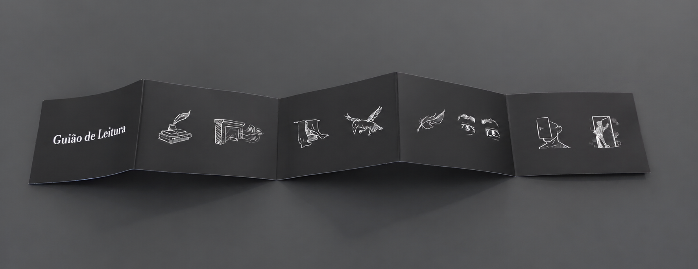
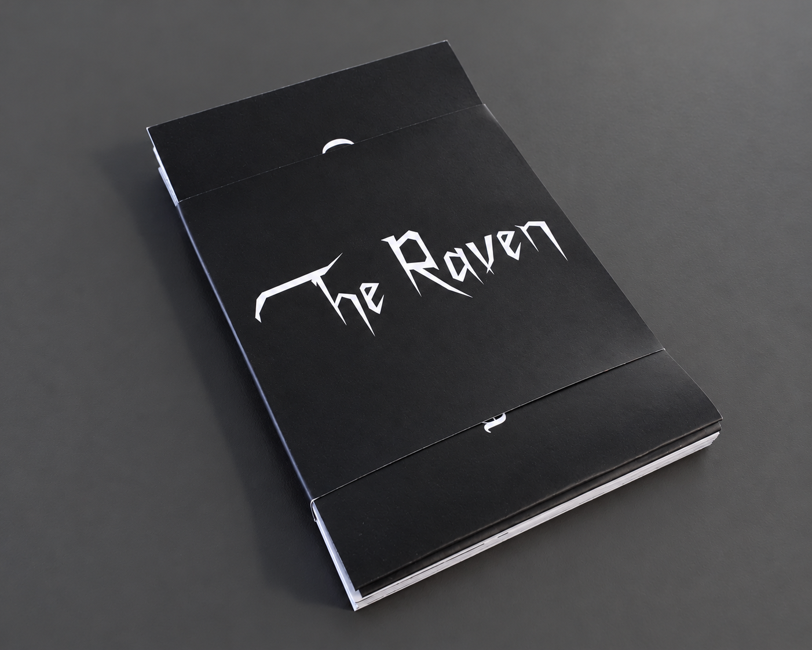
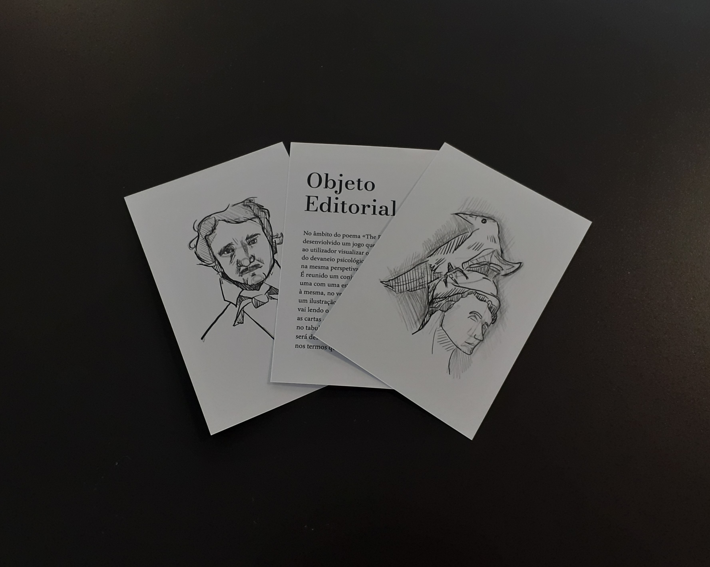
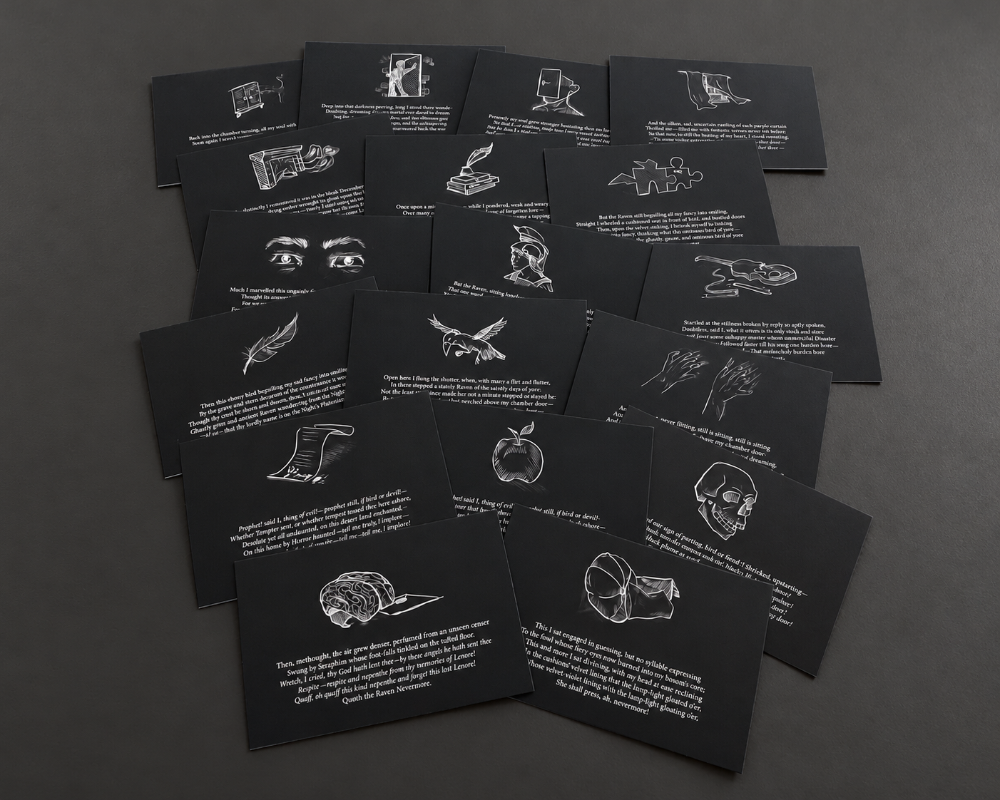
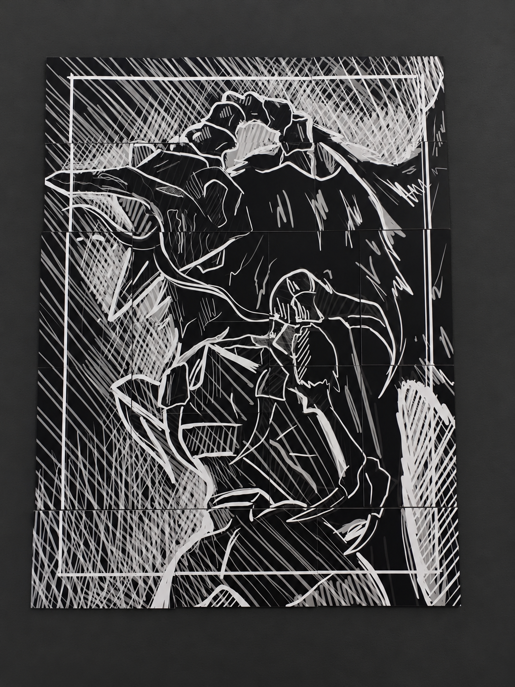

The Raven
Uma narrativa editorial transformada num objeto físico e interativo.
The Raven explora a relação entre narrativa, objeto e interação, propondo uma experiência que ultrapassa a leitura linear tradicional.
O projeto combina diferentes peças editoriais e elementos gráficos, convidando o utilizador a descobrir informação, estabelecer relações e construir progressivamente a narrativa.
- Design Editorial
- Narrativa
- Interação
- Ilustração


A narrativa transforma-se num objeto a descobrir.
A experiência é construída através de múltiplos elementos físicos que obrigam o leitor a participar na organização e interpretação do conteúdo.


O conjunto de cartas funciona como extensão da narrativa, introduzindo informação fragmentada e relações visuais que são reveladas através da manipulação das peças.
